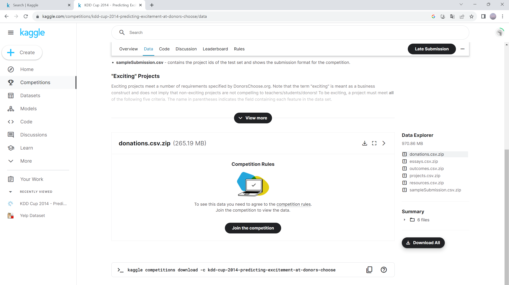
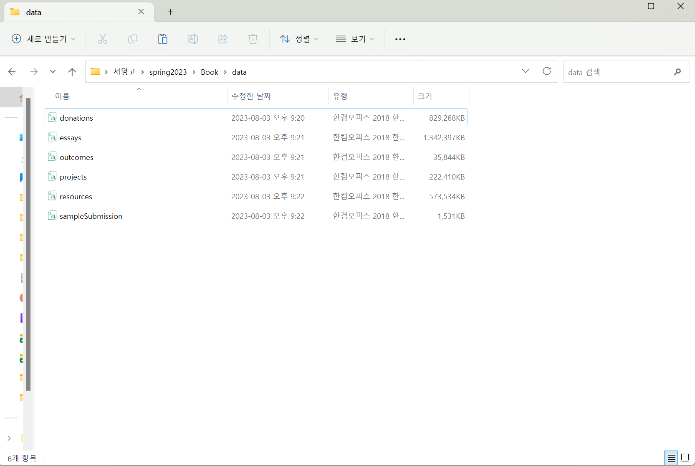
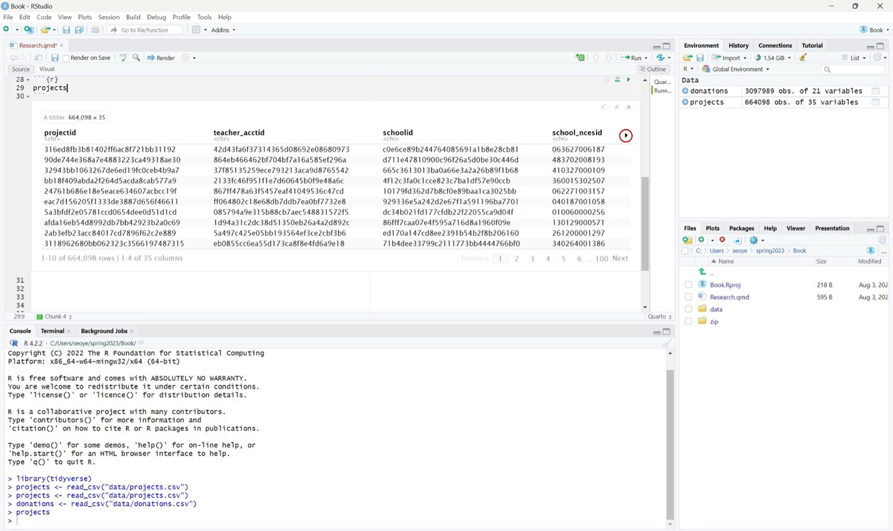
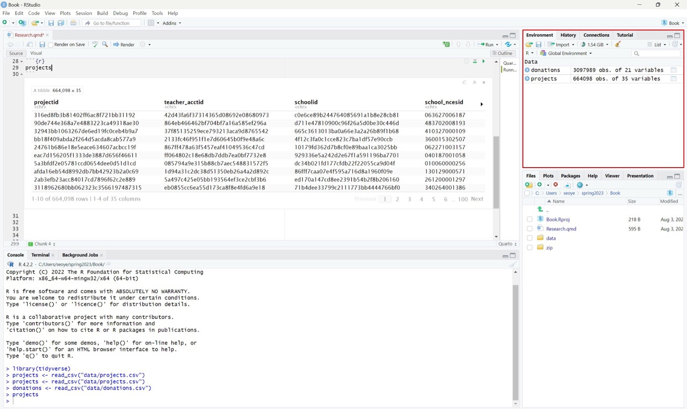
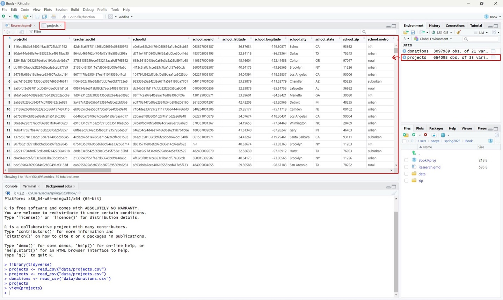
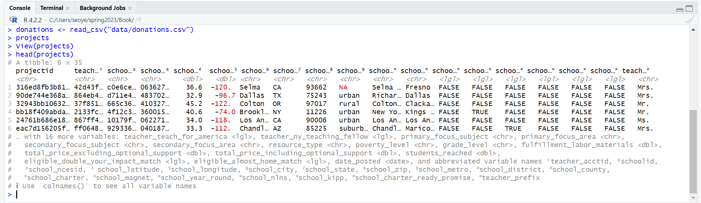
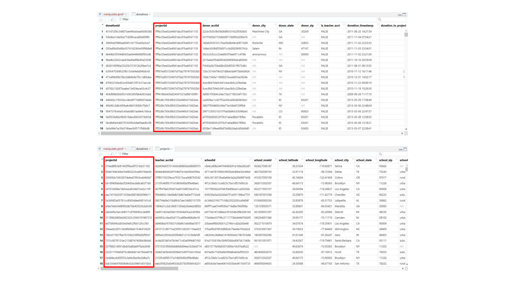
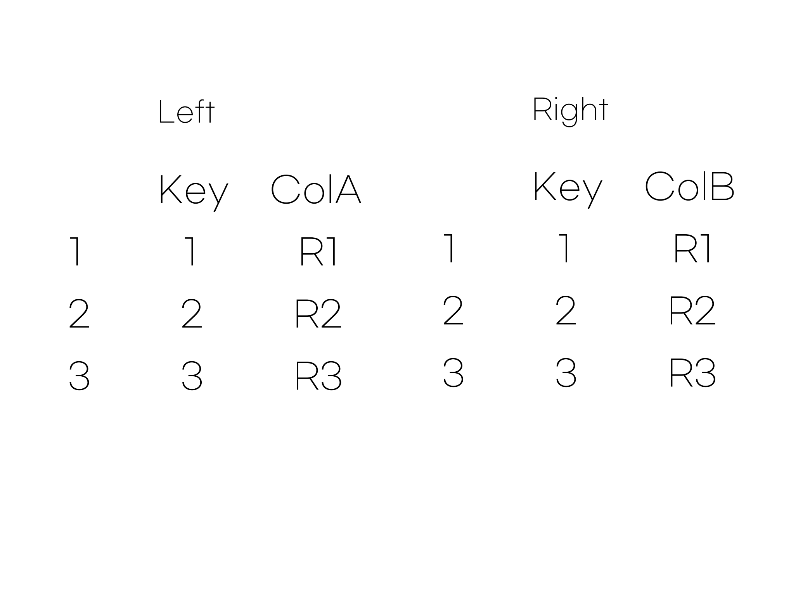
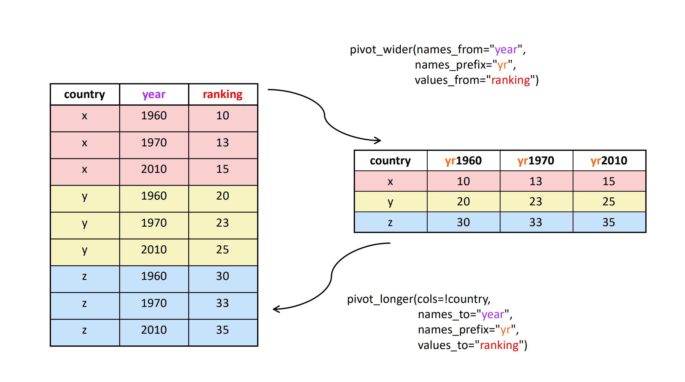

library(tidyverse)7 크라우드펀딩 빅데이터 불러오기, 분석 가능한 형태로 만들기
7.1 Tidyverse를 이용해 크라우드펀딩 빅데이터 로드하기
마지막으로, tidyverse에 내장된 패키지를 이용해 외부의 데이터를 불러오는 방법에 대해 알아보겠습니다. R은 애초에 데이터를 다루기 위해 만들어진 언어이므로, 당연히 외부 데이터를 불러오는 함수가 내장되어 있습니다. 그러나 예전에 만들어진 기능이기도 하고, 몇 가지 직관적이지 않은 동작 때문에 여러가지 에러가 발생하는 경우가 많습니다. 또 데이터에 로마 알파벳과 숫자 이외에 다른 정보가 들어 있으면 이를 처리하기 위한 작업을 추가적으로 해야 하는 경우도 있습니다. 엑셀, SPSS, Stata 등 다른 소프트웨어에서 사용하는 포멧에 취약하기도 하고요. 따라서, 앞으로 우리는 R이 원래 제공하는 함수가 아닌, tidyverse에 내장된 함수를 사용해서 외부 데이터를 불러올 것입니다.
이 책은 데이터 저널리스트가 되고자 하는 여러분들을 위한 것이므로, 나중에는 여러분만의 데이터를 얻는 방법을 배울 것입니다. 하지만, 그것은 조금 후의 일이니, 일단은 제가 생각하기에 연습에 사용하기 좋다고 생각하는 데이터를 사용하겠습니다.
7.1.1 donorschoose.org 데이터 소개
우리가 당분간 사용할 데이터는 donorschoose.org라는 미국 크라우드펀딩 웹사이트의 로그 데이터 입니다. 여러분들도 크라우드펀딩 이라는 용어는 자주 들어봤을 것이라고 생각합니다. 못 들어보셨을 분들을 위해 짧게 설명하자면, 크라우드 펀딩은 돈을 달라고 요구하는 웹사이트 입니다. 물론 그냥 돈을 달라는 것은 아니고, 돈이 필요한 기발한 아이디어를 일종의 ‘프로젝트’ 형태로 올리는 경우가 많습니다. 웹사이트에 들른 잠재적 기부자들은 만약 그 아이디어가 마음에 들면 5달러, 10달러 정도의 작은 돈을 ‘기부’하는 것이지요. 미국에서는 ’Indiegogo’, ‘Kickstarter’, 한국에서는 ‘와디즈’, ‘텀블벅’ 등이 유명합니다.
크라우드펀딩은 많은 경우 소규모 사업 아이디어에 작은 규모의 투자를 받기 위한 플랫폼입니다. 하지만, 우리가 사용할 donorschoose.org는 그 성격이 조금 다릅니다. 여기에 올라오는 프로젝트들은 신기한 아이디어를 가지고 있는 창업자가 아니라, 교육에 필요한 기자재가 부족한 공립학교 선생님들이 올립니다. 그래서 프로젝트 소개에는 하고자 하는 교육의 목적과 학생들에 대한 소개, 필요한 기자재 목록 등과 함께 필요한 자금의 총액이 있습니다. 이 사연을 읽고 기부자들은 몇 달러의 돈을 기부하는 것이지요.
다른 크라우드펀딩 웹사이트들처럼 donorschoose.org도 몇 가지 룰이 있는데요, 그 중 가장 중요한 것은 다음 두가지 입니다. 첫째, 정해진 시간(보통 90일) 안에 프로젝트를 올린 선생님이 정해놓은 목표액을 모두 채우면, 해당 프로젝트는 완료되고 선생님은 돈을 받습니다(목표액). 둘째, 정해진 시간 안에 목표액을 채우지 못하면 기부된 돈은 원 기부자에게 모두 환불 됩니다(환불 정책).
이 데이터를 이용하는 이유는 현실의 온라인 환경에서 발생한 ‘로그 데이터’이기 때문입니다. 우리가 전통적인 기사에서 흔히 보는 통계 데이터들은 상당히 정제되고 있고, 목적에 따른 디자인에 따라 생성된 데이터이지만, 이러한 로글 데이터는 그렇지 않지요. 많은 경우, ’데이터 저널리스트’들은 그런 데이터를 분석하고 싶어합니다 (첫장에서 이야기한 데이터 저널리즘의 ’새로움(novelty)’ 전략을 기억하시나요?) 그러니 처음부터 조금 어렵더라도 ’리얼’한 데이터를 만지는 것이 좋지 않을까 합니다.
이 데이터는 어디서 얻을까요? kaggle이라고 하는 일종의 데이터 경진대회 웹사이트에서 얻을 것입니다. ’kaggle’에 대해서 길게 설명할 수는 없지만, 데이터 사이언스에 종사하는 사람들 또는 학생들이 자신이 만들어낸 알고리즘을 뽐내기 위해 경쟁하는 웹사이트라고 생각하시면 되겠습니다. 이렇게 발표된 알고리즘 중 유용한 것들이 있으니 기업들도 자신의 비즈니스에서 생성된 데이터를 ’kaggle’을 통해 공개하기도 합니다. donorschoose.org 데이터도 그런 이유로 ’kaggle’에 공개되어 있습니다. 다음 링크를 따라가세요.
kaggle에 가입을 완료하고, 약관 승인 절차들을 거치고 나면, 데이터탭 오른쪽 아래 ‘Download All’ 버튼을 눌러 모든 파일을 zip 압축 형태로 받을 수 있습니다. 압축된 파일이 1기가 가까이 되니, 아마 여러분 대부분들이 지금까지 다루어본 어떤 데이터보다 ’빅’데이터에 가까울 가능성이 크겠네요.

압축을 해제해 압축 파일 안에 있는 6개의 csv 파일을 여러분이 앞으로 사용할 프로젝트(잊지 않으셨죠?) 폴더 안에 data라는 폴더를 하나 만들고 그 안에 옮겨놓습니다. 다음 그림처럼요.

이제 데이터를 부를 준비가 되었습니다.
7.1.2 데이터 불러오기
데이터를 부르기 전에 다음을 했는지 확인 합시다.
- 이 책의 내용을 학습하면서 사용할 R 프로젝트를 만들었다.
- 해당 프로젝트로 이동하였다.
tidyverse패키지를 설치하였다.- 프로젝트 안에서 donorschoose.org를 분석하는데 사용할 노트북 파일(
qmd파일)을 만들었다. - 해당 노트북에서
tidyverse패키지를 로드하였다.
위의 체크리스트에 대한 대답이 모두 ’네’라면, 이제 다음과 같은 코드를 실행해 봅시다.
projects <- read_csv("data/projects.csv")이 코드를 조금 뜯어보도록 합시다. 첫째, read_csv()는 csv 포맷으로 존재하는 데이터 파일을 부르는 함수로 tidyverse 패키지에 속해있습니다. 둘째, 우리가 사용하고 있는 프로젝트 폴더 안에 data 폴더를 하나 만들고 그 안에 projects.csv 파일을 저장했으니, 파일 경로는 상대경로를 이용해 “data/projects.csv”가 됩니다. 셋째, 이렇게 데이터를 부르면 데이터는 저장장치에서 메모리로 불러와집니다. 하지만, 거기까지만 한다면, 문제가 발생합니다. 앞서 이야기한 바와 같이 이름이 없으니 존재하지 않는 것이나 마찬가지가 됩니다. 즉, 한 번 불러와진 다음, 그냥 날아가버린다고 생각하시면 됩니다. 따라서 우리는 이 데이터에 이름을 붙여주어야 합니다. 이름을 붙이기 위한 표현이 바로 projects <- 이 부분입니다. 벡터에 이름을 붙일 때, 리스트에 이름을 붙일 때와 똑같지요? R에서는 몇 백 메가 크기의 데이터나 숫자 한개로 이루어진 벡터나 똑같이 하나의 변수로 취급될 뿐입니다.
7.1.2.1 csv와 여러 테이블 데이터 포맷
자, 이제 데이터를 분석할 준비가 끝났습니다. 그런데, 다음으로 넘어가기 전에에 csv 포멧을 이용해보지 않은 분들도 있지요? 그런 분들을 위해 잠깐 csv에 대해 설명해 보겠습니다.
csv는 “comma separated values”의 약자입니다. 간단히 말해서 “쉼표”를 이용해서 값들을 구분해 놓은 테이블 형태의 데이터라는 뜻입니다. 이게 무슨 뜻인지는 아래의 그림을 보면 쉽게 이해 되실 겁니다.
https://www.exceldemy.com/convert-excel-to-csv-comma-delimited/
아래의 예에서 컬럼을 구분하기 위해 아주 간단하게 쉼표를 써 주었습니다. 행을 구분해 주기 위해서는 엔터를 쳐서 줄을 바꿔주었다고 할 수 있죠. csv 파일은 사실 이러한 규칙을 따르는 텍스트 파일에 불과합니다. 이를 R이나 마이크로소프트 엑셀, 구글 시트 등에서 부를 때 테이블로 여러분에게 ’표현’해 줄 뿐입니다. 사실 이러한 csv 파일은 테이블 데이터를 표현하는 가장 간단한 방법이지요.
여러분은 아마도 마이크로소프트 엑셀이 사용하는 xlsx나 xls 등의 파일 포멧에 더욱 익술할 것입니다. 그런데 사실 생각해 보면 이러한 포멧의 파일들은 테이블 형태의 데이터 말고도 다양한 정보를 포함하고 있습니다. 글꼴이나, 테이블의 폭, 테두리, 수식 등의 정보들이 그것이지요. 이러한 추가 정보들을 이용하면 여러 편리한 점들이 있지만, 무엇보다 여러분들은 엑셀에 의존할 수밖에 없고, 데이터의 크기도 커지게 됩니다. 즉, 편의성을 위해 범용성을 희생한 것이지요.
따라서, 대규모의 데이터를 다양한 플랫폼에서 다루어야 하는 데이터 사이언스를 위해서는 테이블 데이터를 주고 받을 때 안전하고, 범용적이고, 가벼운 csv 형식을 사용하는 경우가 많습니다.
그렇다면, 테이블 형태의 데이터가 아니라면요? 그것은 나중에 살펴보도록 하겠습니다.
csv가 데이터 저널리즘을 위해 제일 유용하고 흔하다고 하더라도, 여러분들이 항상 테이블 형태의 데이터로 csv 파일을 다루게 되리라는 보장은 없습니다. 그건 데이터를 주는 사람 마음이지요. 그러면 다른 포멧의 데이터들은 어떻게 R로 불러들여야 할까요? 다행이 tidyverse에는 이 문제를 해결하기 위한 다양한 함수들이 포함되어 있습니다. 이 교재에서는 csv 파일 이외의 테이블 형식을 다룰 일이 없겠지만, 앞으로를 위해 다음 표를 참조하세요.
| 데이터 포맷 | 함수 |
|---|---|
| csv | read_csv() |
| xls, xlsx | read_excel() |
| sas7bdat, sas7cat (SAS) | read_xpt() |
| sav (SPSS) | read_sav() |
| dta (Stata) | read_dta() |
7.2 데이터 조작하기
데이터를 불러온 다음 바로 분석을 시작하면 좋겠지만, 그럴 수 있는 경우는 많지 않습니다. 내가 분석하고자 하는 데이터가 바로 분석 가능하지 않는 타입인 경우도 있고, 기존 데이터에 특정 연산을 가해 분석하고자 하는 데이터를 도출해야 하는 경우도 있습니다. 어떤 경우에는 내가 분석하고자 하는 데이터가 여러 테이블에 흩어져 있어서, 이를 결합해야 하는 경우도 있을 것입니다.
이 중 가장 흔하게 나타나는 시나리오와 이를 수행하기 위한 tidyverse 스타일의 코딩 사례를 살펴보도록 하겠습니다. 이를 위해 먼저 donorschoose.org 데이터 중 두 개의 테이블을 R로 불러오도록 하겠습니다.
projects <- read_csv("data/projects.csv")
donations <- read_csv("data/donations.csv")7.2.1 데이터 탐색
먼저 projects 데이터프레임을 한 번 훑어보겠습니다.
projects# A tibble: 664,098 x 35
projectid teacher_acctid schoolid school_ncesid school_latitude
<chr> <chr> <chr> <chr> <dbl>
1 316ed8fb3b81402ff6ac8f~ 42d43fa6f3731~ c0e6ce8~ 063627006187 36.6
2 90de744e368a7e4883223c~ 864eb466462bf~ d711e47~ 483702008193 32.9
3 32943bb1063267de6ed19f~ 37f85135259ec~ 665c361~ 410327000109 45.2
4 bb18f409abda2f264d5acd~ 2133fc46f951f~ 4f12c3f~ 360015302507 40.6
5 24761b686e18e5eace6346~ 867ff478a63f5~ 10179fd~ 062271003157 34.0
6 eac7d156205f1333de3887~ ff064802c18e6~ 929336e~ 040187001058 33.3
7 5a3bfdf2e05781ccd0654d~ 085794a9e315b~ dc34b02~ 010060000256 32.8
8 afda16eb54d8992db7bb42~ 1d94a31c2dc38~ 86fff7c~ 130129000571 33.9
9 2ab3efb23acc84017cd789~ 5a497c425e05b~ ed170a1~ 261200001297 42.4
10 3118962680bb062323c356~ eb0855cc6ea55~ 71b4dee~ 340264001386 40.0
# i 664,088 more rows
# i 30 more variables: school_longitude <dbl>, school_city <chr>,
# school_state <chr>, school_zip <chr>, school_metro <chr>,
# school_district <chr>, school_county <chr>, school_charter <lgl>,
# school_magnet <lgl>, school_year_round <lgl>, school_nlns <lgl>,
# school_kipp <lgl>, school_charter_ready_promise <lgl>,
# teacher_prefix <chr>, teacher_teach_for_america <lgl>, ...이렇게 데이터프레임의 변수명을 그대로 실행시키면, Rstudio 노트북 환경에서는 명령어 아래 일부가 출력 됩니다. 여기서 오른쪽 화살표는 화면에 표시된 것 말고도 다른 열이 더 있다는 것을 의미합니다. 그 화살표를 클릭하면 화면이 오른쪽으로 넘어가게 됩니다. 그리고 표 아래에는 인터넷 게시판처럼, 페이지를 선택할 수 있습니다. 이는 화면에 출력된 것 말고도 행이 더 남아 있다는 것을 의미하지요. 그곳에 있는 숫자를 클릭하면 다음 페이지를 볼 수 있습니다.

그것 말고도 데이터프레임을 탐색하기 위한 방법은 여러가지가 있습니다. 어떤 식으로든 변수가 생성되고 나면, Rstudio의 기본 설정상 오른쪽 상단에 있는 Environment 창에 지금 메모리에 저장되어 있는 변수들이 표시됩니다.

지금 보면, 아까 우리가 불러온 donations 데이터 프레임과 projects 데이터프레임이 저장되어 있네요. projects를 클릭해 보겠습니다.

그러면 우리가 엑셀에서 보는 것과 유사하게 스크롤 할 수 있는 테이블 화면이 떠오릅니다. 여기서는 조금 더 익숙한 방식으로 여러 데이터를 살펴보실 수 있을 것입니다.
데이터가 많은 경우에 별로 권장되지는 않지만 콘솔에서 탐색하는 방법도 있습니다. 콘솔에서 다음과 같은 코드를 실행시켜보세요.
head(projects)
그러면 다음과 같은 화면이 등장할 것입니다. 콘솔은 노트북과 달리 사람이 조작할 수 있는 환경을 제공하지 못하기 때문에, 한 번에 표현할 수 있는 것 이상의 데이터는 생략이 되어 표시된다는 것을 알 수 있습니다.

콘솔에서는 다음과 같은 명령어가 더욱 유용합니다.
str(projects)spc_tbl_ [664,098 x 35] (S3: spec_tbl_df/tbl_df/tbl/data.frame)
$ projectid : chr [1:664098] "316ed8fb3b81402ff6ac8f721bb31192" "90de744e368a7e4883223ca49318ae30" "32943bb1063267de6ed19fc0ceb4b9a7" "bb18f409abda2f264d5acda8cab577a9" ...
$ teacher_acctid : chr [1:664098] "42d43fa6f37314365d08692e08680973" "864eb466462bf704bf7a16a585ef296a" "37f85135259ece793213aca9d8765542" "2133fc46f951f1e7d60645b0f9e48a6c" ...
$ schoolid : chr [1:664098] "c0e6ce89b244764085691a1b8e28cb81" "d711e47810900c96f26a5d0be30c446d" "665c3613013ba0a66e3a2a26b89f1b68" "4f12c3fa0c1cce823c7ba1df57e90ccb" ...
$ school_ncesid : chr [1:664098] "063627006187" "483702008193" "410327000109" "360015302507" ...
$ school_latitude : num [1:664098] 36.6 32.9 45.2 40.6 34 ...
$ school_longitude : num [1:664098] -119.6 -96.7 -122.4 -74 -118.3 ...
$ school_city : chr [1:664098] "Selma" "Dallas" "Colton" "Brooklyn" ...
$ school_state : chr [1:664098] "CA" "TX" "OR" "NY" ...
$ school_zip : chr [1:664098] "93662" "75243" "97017" "11226" ...
$ school_metro : chr [1:664098] NA "urban" "rural" "urban" ...
$ school_district : chr [1:664098] "Selma Unified Sch District" "Richardson Ind School District" "Colton School District 53" "New York City Dept Of Ed" ...
$ school_county : chr [1:664098] "Fresno" "Dallas" "Clackamas" "Kings (Brooklyn)" ...
$ school_charter : logi [1:664098] FALSE FALSE FALSE FALSE FALSE FALSE ...
$ school_magnet : logi [1:664098] FALSE FALSE FALSE TRUE FALSE FALSE ...
$ school_year_round : logi [1:664098] FALSE FALSE FALSE FALSE FALSE TRUE ...
$ school_nlns : logi [1:664098] FALSE FALSE FALSE FALSE FALSE FALSE ...
$ school_kipp : logi [1:664098] FALSE FALSE FALSE FALSE FALSE FALSE ...
$ school_charter_ready_promise : logi [1:664098] FALSE FALSE FALSE FALSE FALSE FALSE ...
$ teacher_prefix : chr [1:664098] "Mrs." "Mrs." "Mr." "Mr." ...
$ teacher_teach_for_america : logi [1:664098] FALSE FALSE FALSE TRUE FALSE FALSE ...
$ teacher_ny_teaching_fellow : logi [1:664098] FALSE FALSE FALSE FALSE FALSE FALSE ...
$ primary_focus_subject : chr [1:664098] "Literature & Writing" "Literacy" "Literacy" "Social Sciences" ...
$ primary_focus_area : chr [1:664098] "Literacy & Language" "Literacy & Language" "Literacy & Language" "History & Civics" ...
$ secondary_focus_subject : chr [1:664098] "College & Career Prep" "ESL" "Mathematics" "Special Needs" ...
$ secondary_focus_area : chr [1:664098] "Applied Learning" "Literacy & Language" "Math & Science" "Special Needs" ...
$ resource_type : chr [1:664098] "Books" "Books" "Technology" "Books" ...
$ poverty_level : chr [1:664098] "highest poverty" "highest poverty" "high poverty" "highest poverty" ...
$ grade_level : chr [1:664098] "Grades 6-8" "Grades PreK-2" "Grades PreK-2" "Grades 3-5" ...
$ fulfillment_labor_materials : num [1:664098] 30 30 30 30 30 30 30 30 30 30 ...
$ total_price_excluding_optional_support: num [1:664098] 556 296 431 576 408 ...
$ total_price_including_optional_support: num [1:664098] 654 349 507 678 480 ...
$ students_reached : num [1:664098] 32 22 17 12 24 20 320 18 25 28 ...
$ eligible_double_your_impact_match : logi [1:664098] FALSE FALSE FALSE FALSE FALSE FALSE ...
$ eligible_almost_home_match : logi [1:664098] FALSE FALSE FALSE FALSE FALSE FALSE ...
$ date_posted : Date[1:664098], format: "2014-05-12" "2014-05-12" ...
- attr(*, "spec")=
.. cols(
.. projectid = col_character(),
.. teacher_acctid = col_character(),
.. schoolid = col_character(),
.. school_ncesid = col_character(),
.. school_latitude = col_double(),
.. school_longitude = col_double(),
.. school_city = col_character(),
.. school_state = col_character(),
.. school_zip = col_character(),
.. school_metro = col_character(),
.. school_district = col_character(),
.. school_county = col_character(),
.. school_charter = col_logical(),
.. school_magnet = col_logical(),
.. school_year_round = col_logical(),
.. school_nlns = col_logical(),
.. school_kipp = col_logical(),
.. school_charter_ready_promise = col_logical(),
.. teacher_prefix = col_character(),
.. teacher_teach_for_america = col_logical(),
.. teacher_ny_teaching_fellow = col_logical(),
.. primary_focus_subject = col_character(),
.. primary_focus_area = col_character(),
.. secondary_focus_subject = col_character(),
.. secondary_focus_area = col_character(),
.. resource_type = col_character(),
.. poverty_level = col_character(),
.. grade_level = col_character(),
.. fulfillment_labor_materials = col_double(),
.. total_price_excluding_optional_support = col_double(),
.. total_price_including_optional_support = col_double(),
.. students_reached = col_double(),
.. eligible_double_your_impact_match = col_logical(),
.. eligible_almost_home_match = col_logical(),
.. date_posted = col_date(format = "")
.. )
- attr(*, "problems")=<externalptr> str()은 structure라는 뜻으로, 각 컬럼 이름과 각 컬럼의 데이터 타입, 데이터의 갯수, 그리고 가장 상위에 있는 몇가지 값을 보여줍니다. 많은 경우 str()은 각 열의 데이터 타입을 확인하기 위해 사용합니다. 그런데, 만약 str()이 과도하게 많은 정보를 준다고 생각하신다면 다음 명령어도 유용합니다.
names(projects) [1] "projectid"
[2] "teacher_acctid"
[3] "schoolid"
[4] "school_ncesid"
[5] "school_latitude"
[6] "school_longitude"
[7] "school_city"
[8] "school_state"
[9] "school_zip"
[10] "school_metro"
[11] "school_district"
[12] "school_county"
[13] "school_charter"
[14] "school_magnet"
[15] "school_year_round"
[16] "school_nlns"
[17] "school_kipp"
[18] "school_charter_ready_promise"
[19] "teacher_prefix"
[20] "teacher_teach_for_america"
[21] "teacher_ny_teaching_fellow"
[22] "primary_focus_subject"
[23] "primary_focus_area"
[24] "secondary_focus_subject"
[25] "secondary_focus_area"
[26] "resource_type"
[27] "poverty_level"
[28] "grade_level"
[29] "fulfillment_labor_materials"
[30] "total_price_excluding_optional_support"
[31] "total_price_including_optional_support"
[32] "students_reached"
[33] "eligible_double_your_impact_match"
[34] "eligible_almost_home_match"
[35] "date_posted" 이 함수는 데이터프레임 각 열의 이름만을 보여줍니다.
7.2.2 데이터 필터링 (= 서브세팅)
위의 방법으로 데이터를 탐색하다보면, school_ncesid열에 결측값이 다수 존재한다는 것을 알 수 있습니다. NCES가 미국 국가교육통계센터(National Center for Education Statistics)를 의미하니, 공식 통계 상의 학교 ID라는 것을 알 수 있습니다. 그런데, 이 ID가 없다는 것은 뭔가 좀 이상하네요. 만약, 우리가 ID에 결측치가 있는 것은 정상적이지 않으므로 분석에서 제외하기로 결정했고 해 보죠. 그렇다면 지금까지 배운 것을 이용해 어떻게 제외하면 될까요?
물론 답은 세브세트 입니다. 그 중에서도 결측치가 있는 행을 삭제하는 것이니, filter() 함수를 사용해야 하겠네요. 그리고 school_ncesid의 값이 결측되지 않은 경우 만을 취하고자 하니 filter() 함수 안에 들어갈 조건은 !is.na(school_ncesid)가 되겠네요. 따라서 다음과 같습니다.
projects_no_na <- projects |>
filter(!is.na(school_ncesid))이번엔 학교의 위도와 경도 정보는 사용하지 않을 것이라고 해 볼까요? 다시 말해, school_latitude 열과 school_longitude 열을 제외하겠다는 뜻이겠군요. 그 때는 이렇게 해 볼 수 있습니다.
projects_cleaned <- projects_no_na |>
select(!c(school_latitude, school_longitude))여기서도 !은 not의 의미이므로, “해당 컬럼 두 개 빼고” 라는 뜻이 됩니다. 두개 컬럼 이름을 하나의 벡터로 묶기 위해 c()를 사용했다는 것에 주목해주세요.
물론 행과 열의 서브세팅을 파이프로 결합할 수도 있습니다 (이 방법이 더 좋습니다.).
projects_cleaned <- projects |>
filter(!is.na(school_ncesid)) |>
select(!c(school_latitude, school_longitude))7.2.3 새로운 변수 만들기
주어진 데이터를 분석에 그대로 사용하는 경우는 많지 않습니다. 주어진 변수, 또는 변수들을 바탕으로 분석에 적합한 새로운 변수를 만들어 주어야 합니다. 예컨대, 야구에서 타수와 안타 수가 주어져 있을 때, 타자의 타격 능력을 분석하기 위해서 두 변수를 조합해 타율을 계산하는 경우가 그런 경우에 해당할 것입니다.
이렇게 새로운 변수를 만들기 위한 tidyverse 문법은 mutate() 함수를 사용하는 것입니다. 그 형식은 대략 다음과 같습니다.
원래 데이터프레임 |> mutate(새 변수 이름 = 함수(원래 변수))
이렇게 원래의 데이터프레임에 mutate()을 적용하고 나면, 그 결과물은 새로 생산된 변수가 아닙니다! mutate()의 결과물은 원래의 데이터프레임에 새로운 변수(열)이 추가된 새로운 데이터프레임 입니다.
앞서 불러온 donorschoose.org 데이터의 projects 테이블에서 각 프로젝트의 목표액이 달러로 포함되어 있는데요, 보도하는 사람이 이 목표액을 원화로 표시하고 싶었다고 해 보지요. 원달러 환율이 대략 1,200이라고 치면, 원화로 표현된 목표액은 원래 변수에 1,200을 곱한 것이 되겠네요. 사실 목표액에 해당하는 변수는 projects 테이블에 두 개 있는데, 그 중 일단 total_price_excluding_optional_support를 이용하겠습니다. 그러면, 새 변수를 만들기 위해서는 다음과 같이 써 주면 됩니다.
projects |>
mutate(size_kw = total_price_excluding_optional_support * 1200)# A tibble: 664,098 x 36
projectid teacher_acctid schoolid school_ncesid school_latitude
<chr> <chr> <chr> <chr> <dbl>
1 316ed8fb3b81402ff6ac8f~ 42d43fa6f3731~ c0e6ce8~ 063627006187 36.6
2 90de744e368a7e4883223c~ 864eb466462bf~ d711e47~ 483702008193 32.9
3 32943bb1063267de6ed19f~ 37f85135259ec~ 665c361~ 410327000109 45.2
4 bb18f409abda2f264d5acd~ 2133fc46f951f~ 4f12c3f~ 360015302507 40.6
5 24761b686e18e5eace6346~ 867ff478a63f5~ 10179fd~ 062271003157 34.0
6 eac7d156205f1333de3887~ ff064802c18e6~ 929336e~ 040187001058 33.3
7 5a3bfdf2e05781ccd0654d~ 085794a9e315b~ dc34b02~ 010060000256 32.8
8 afda16eb54d8992db7bb42~ 1d94a31c2dc38~ 86fff7c~ 130129000571 33.9
9 2ab3efb23acc84017cd789~ 5a497c425e05b~ ed170a1~ 261200001297 42.4
10 3118962680bb062323c356~ eb0855cc6ea55~ 71b4dee~ 340264001386 40.0
# i 664,088 more rows
# i 31 more variables: school_longitude <dbl>, school_city <chr>,
# school_state <chr>, school_zip <chr>, school_metro <chr>,
# school_district <chr>, school_county <chr>, school_charter <lgl>,
# school_magnet <lgl>, school_year_round <lgl>, school_nlns <lgl>,
# school_kipp <lgl>, school_charter_ready_promise <lgl>,
# teacher_prefix <chr>, teacher_teach_for_america <lgl>, ...보시다시피, 위의 코드를 실행시키면, 원래 projects 테이블에 새로 만들어진 변수가 추가된 커다란 테이블이 출력됩니다. 하지만 이러한 코드에는 문제가 있습니다. 여러번 반복해서 말하기 때문에 눈치채신 분도 있겠지만, 이렇게 새로 만들어진 테이블은 원래의 테이블과는 다른 새로운 테이블이고, 이 새로운 테이블에는 이름이 없습니다! 이름이 없는 데이터는 존재하지 않는 데이터나 마찬가지라고 했지요? 따라서, 기껏 새로운 변수를 만들고 모니터로 한 번 확인하고는 이를 그냥 버린 것과 다름 없습니다.
그렇다면, projects 테이블에 새 변수(열)을 추가 하려면 어떻게 해야 할까요? 다음과 같이 하면 됩니다.
projects <- projects |>
mutate(size_kw = total_price_excluding_optional_support * 1200)앞의 예와 유일한 차이는 projects <- 이 부분 뿐입니다. 즉, mutate()을 통해 새로운 테이블을 만든 후, 그 테이블의 이름을 원래의 테이블 이름인 projects에 할당해 버린 것이지요. 엄밀히 말하면, 이제 변수를 새로 만들기 전 원래 테이블은 사라져 버리고, 새로운 테이블이 원래의 테이블을 대신해서 projects라는 이름을 대체하고 있는 것이지요.
만약, size_kw라는 새로운 변수를 만들지 않고, 원화로 표시된 숫자가 원래 total_price_excluding_optional_support 열에 기록된 숫자를 대체하기를 바란다면 어떻게 할까요? 위의 예와 비슷한 논리로 다음과 같이 하면 됩니다.
projects |>
mutate(total_price_excluding_optional_support = total_price_excluding_optional_support * 1200)# A tibble: 664,098 x 36
projectid teacher_acctid schoolid school_ncesid school_latitude
<chr> <chr> <chr> <chr> <dbl>
1 316ed8fb3b81402ff6ac8f~ 42d43fa6f3731~ c0e6ce8~ 063627006187 36.6
2 90de744e368a7e4883223c~ 864eb466462bf~ d711e47~ 483702008193 32.9
3 32943bb1063267de6ed19f~ 37f85135259ec~ 665c361~ 410327000109 45.2
4 bb18f409abda2f264d5acd~ 2133fc46f951f~ 4f12c3f~ 360015302507 40.6
5 24761b686e18e5eace6346~ 867ff478a63f5~ 10179fd~ 062271003157 34.0
6 eac7d156205f1333de3887~ ff064802c18e6~ 929336e~ 040187001058 33.3
7 5a3bfdf2e05781ccd0654d~ 085794a9e315b~ dc34b02~ 010060000256 32.8
8 afda16eb54d8992db7bb42~ 1d94a31c2dc38~ 86fff7c~ 130129000571 33.9
9 2ab3efb23acc84017cd789~ 5a497c425e05b~ ed170a1~ 261200001297 42.4
10 3118962680bb062323c356~ eb0855cc6ea55~ 71b4dee~ 340264001386 40.0
# i 664,088 more rows
# i 31 more variables: school_longitude <dbl>, school_city <chr>,
# school_state <chr>, school_zip <chr>, school_metro <chr>,
# school_district <chr>, school_county <chr>, school_charter <lgl>,
# school_magnet <lgl>, school_year_round <lgl>, school_nlns <lgl>,
# school_kipp <lgl>, school_charter_ready_promise <lgl>,
# teacher_prefix <chr>, teacher_teach_for_america <lgl>, ...즉, 원래의 값에 1200을 곱한 값에 원래의 이름을 할당함으로써, 새로운 값이 원래의 값을 대체하도록 하는 것입니다.
앞서 projects 테이블에 프로젝트 목표액에 해당하는 열이 두 개라고 했지요? 앞에서 사용한 것과 다른 하나는 total_price_including_optional_support 입니다. 앞에서 사용한 변수가 “optional_support”라는 것을 제외한(excluding) 금액이었다면, 두번째 변수는 “optional_support”를 포함한다(including)는 차이가 있습니다. 사실 “optional support”는 해당 프로젝트에 지원되는 금액이 아니라, ’donorschoose.org’에 지원되는 금액을 의미합니다. ’donorschoose.org’도 서비스를 유지하기 위해 직원 월급, 홈페이지 유지비 등 다양한 비용을 지불해야 할테니까요.
이제 기자가 이 “optional_support”가 전체 프로젝트 목표액에서 차지하는 비율(%)에 관심을 가지게 되었다고 합시다. 그러면 두 개의 목표액 수치를 조합해서 이 비율을 계산해야 하겠네요. 이 역시 mutate()을 이용해 쉽게 할 수 있습니다.
projects |>
mutate(ratio = (total_price_including_optional_support - total_price_including_optional_support) / total_price_excluding_optional_support)# A tibble: 664,098 x 37
projectid teacher_acctid schoolid school_ncesid school_latitude
<chr> <chr> <chr> <chr> <dbl>
1 316ed8fb3b81402ff6ac8f~ 42d43fa6f3731~ c0e6ce8~ 063627006187 36.6
2 90de744e368a7e4883223c~ 864eb466462bf~ d711e47~ 483702008193 32.9
3 32943bb1063267de6ed19f~ 37f85135259ec~ 665c361~ 410327000109 45.2
4 bb18f409abda2f264d5acd~ 2133fc46f951f~ 4f12c3f~ 360015302507 40.6
5 24761b686e18e5eace6346~ 867ff478a63f5~ 10179fd~ 062271003157 34.0
6 eac7d156205f1333de3887~ ff064802c18e6~ 929336e~ 040187001058 33.3
7 5a3bfdf2e05781ccd0654d~ 085794a9e315b~ dc34b02~ 010060000256 32.8
8 afda16eb54d8992db7bb42~ 1d94a31c2dc38~ 86fff7c~ 130129000571 33.9
9 2ab3efb23acc84017cd789~ 5a497c425e05b~ ed170a1~ 261200001297 42.4
10 3118962680bb062323c356~ eb0855cc6ea55~ 71b4dee~ 340264001386 40.0
# i 664,088 more rows
# i 32 more variables: school_longitude <dbl>, school_city <chr>,
# school_state <chr>, school_zip <chr>, school_metro <chr>,
# school_district <chr>, school_county <chr>, school_charter <lgl>,
# school_magnet <lgl>, school_year_round <lgl>, school_nlns <lgl>,
# school_kipp <lgl>, school_charter_ready_promise <lgl>,
# teacher_prefix <chr>, teacher_teach_for_america <lgl>, ...두 목표액의 차이가 “optional support” 금액에 해당할 것이고, 이를 optional support를 포함한 목표액으로 나눈 것이 전체 목표액에서 “optional support”가 차지하는 비율이 되겠지요.
이번에는 변수의 데이터 타입을 바꾸기 위해 mutate()을 사용하는 경우를 살펴보겠습니다. projects 테이블에는 school_zip이라는 변수가 있는데요, 이는 학교 우편번호를 뜻합니다. 그런데 데이터를 로드한 결과 이 우편번호가 문자(character)로 인식되어 있습니다. 이를 숫자로 다시 인식시켜주고 싶다고 하죠. 이에 해당하는 코드는 다음과 같습니다.
projects <- projects |>
mutate(school_zip = as.numeric(school_zip))as.numeric() 이라는 함수가 데이터의 타입을 숫자로 바꾸라는 뜻이니, school_zip의 데이터 타입을 숫자로 바꾼다음, 그 결과물을 원래 변수명인 school_zip에 대체해 버린 것입니다. 이렇게 새로운 데이터 타입을 가지게 된 컬럼을 포함한 새 테이블을 원래 테이블 이름인 projects에 할당해 버렸습니다(projects <- 부분). 따라서 이제 projects 테이블의 school_zip 열은 문자가 아닌 숫자 입니다.
7.2.4 join
두 테이블을 연결하고 싶은 경우도 있습니다. 앞서 본 projects와 donations의 관계가 바로 그렇습니다. donations 테이블에 기록된 것은 각각의 기부들인데, 각 기부는 특정 프로젝트를 위한 것일테니, 기부에 대한 정보와 프로젝트에 대한 정보는 연결될 수 있겠지요. donations 테이블에는 projectid라는 열이 있는데, 이것이 바로 어떤 프로젝트에 대한 기부인지를 표현해 주는 정보입니다. 그리고 똑같은 이름의 열이 projects 테이블에도 존재합니다. 이 테이블에서 projectid는 각 프로젝트의 고유번호겠지요. 따라서, donations 테이블에 있는 projectid가 일치하는 프로젝트를 projects 테이블에서 찾으면 해당 프로젝트에 대한 정보를 찾을 수 있겠지요.

더 나아가, projectid를 이용해 두 테이블을 연결하는 것도 가능합니다. 이를 데이터베이스 용어로 ’join’이라고 합니다.
donorschoose.org의 큰 테이블을 join하기에 앞서, 아주 간단한 예로 연습을 해 보도록 하지요. 먼저 가상의 두 테이블을 만들겠습니다.
left <- data.frame(Key=c(1,2,3),
ColA=c("R1","R2","R3"))
right <- data.frame(Key=c(1,2,4),
ColB=c("F1","F2","F4"))각 테이블은 출력해보면 알겠지만, 두 테이블은 다음과 같이 생겼습니다.

테이블 이름이 left, right인 이유는 앞으로 작성할 코드에서 left 테이블을 먼저, 즉, 왼쪽에 써주고, right 테이블을 나중에, 즉, 오른쪽에 써 줄 것이기 때문입니다.
이 두 테이블이 Key열을 이용해 연결 가능하다는 것은 바로 아시겠지요? 다만, 문제가 있습니다. left 테이블에는 Key의 값으로 1,2,3이 있고, 오른쪽 테이블에는 1,2,4가 있습니다. 즉, 연결이 안 되는 값이 있습니다. 이 때 왼쪽, 오른쪽 중 어느 테이블을 기준으로 두 테이블을 붙여줄 것인가에 따라, ’left join’과 ’right join’이 구분됩니다.
먼저 left join 입니다.
left_join(left, right, by="Key") Key ColA ColB
1 1 R1 F1
2 2 R2 F2
3 3 R3 <NA>left 테이블을 기준으로 했으니, left 테이블에 있는 모든 값에, Key에 의해 매칭이 되는 right 테이블의 정보가 연결되었습니다. Key 3에 해당하는 right 테이블의 행은 없으니 ColB는 결측값으로 남아있고요. right 테이블에서 매칭이 되지 못한 Key 4에 해당하는 값은 버려졌습니다.
위의 코드는 다음과 같이 써도 무방합니다.
left_join(left, right, by=c("Key"="Key")) Key ColA ColB
1 1 R1 F1
2 2 R2 F2
3 3 R3 <NA>by=c("Key"="Key")는 왼쪽 테이블의 Key열과 오른쪽 테이블의 Key열을 매칭하라는 의미입니다. 지금은 이러한 문법이 중요하지 않지만, 경우에 따라서는 매칭할 열임에도 불구하고 왼쪽 테이블과 오른쪽 테이블에서 다른 이름을 사용하고 있는 경우가 있습니다.
또 다음과 같은 코드도 같은 의미입니다.
left |> left_join(right, by=c("Key"="Key")) Key ColA ColB
1 1 R1 F1
2 2 R2 F2
3 3 R3 <NA>이는 left_join() 함수의 첫번째 인수가 파이프에 의해 함수 바깥 왼쪽으로 나간 것이니 지금까지 해온 파이핑과 같은 경우 입니다. 이렇게 하면 앞서와 마찬가지로 가독성 있게 코드를 길게 늘여 쓰는데 도움이 됩니다.
이제 ’right join’을 해 보지요.
left |> right_join(right, by="Key") Key ColA ColB
1 1 R1 F1
2 2 R2 F2
3 4 <NA> F4이번엔 반대로 오른쪽 테이블 기준으로 연결된 것을 알 수 있지요?
사실 join에는 몇 가지가 더 있습니다. 그 중 자주 쓰는 것으로 ’full join’이 있습니다. 이것은 매칭이 안 되더라도 한 쪽 테이블에라도 있으면 일단 연결해주는 방식입니다. 즉, 어떤 정보도 버리지 않는 것이지요.
left |> full_join(right, by="Key") Key ColA ColB
1 1 R1 F1
2 2 R2 F2
3 3 R3 <NA>
4 4 <NA> F4반대로 양쪽 테이블에 모두 정보가 있어야만 연결을 해 주는 ’inner join’도 있습니다.
left |> inner_join(right, by="Key") Key ColA ColB
1 1 R1 F1
2 2 R2 F2이제 donorschoose.org의 두 테이블을 연결해 보도록 하지요.
일단, donations 테이블이 projects 테이블보다 훨씬 더 큰 테이블일 수밖에 없다는 것을 확인합시다. 왜냐하면, 하나의 프로젝트에 대해서 여러개의 기부가 이루어졌을 수 있기 때문이지요. 만약 프로젝트 A에 대해서 기부가 세번 이루어졌다면 ’A’라는 프로젝트의 고유값은 donations 테이블에 세번 등장할 것입니다. 따라서, donations 테이블을 기준으로 projects 테이블을 연결하는 것이 자연스럽겠지요.
대신 projects 테이블에는 21개의 열이, donations 테이블에는 35개의 열이 있으니, 연결 후 정보를 확인하기 너무 어렵습니다. 각 테이블에서 일부 관심있는 열만 뽑아서 연결한 후, 이를 connected라는 테이블로 메모리에 저장하겠습니다..
connected <- donations |>
select(projectid, donation_to_project, donation_optional_support, donation_timestamp) |>
left_join(projects |>
select(projectid, total_price_including_optional_support),
by = c("projectid"="projectid"))
connected# A tibble: 3,097,989 x 5
projectid donation_to_project donation_optional_su~1 donation_timestamp
<chr> <dbl> <dbl> <dttm>
1 ffffac55ee02a~ 42.5 7.5 2011-08-25 14:27:34
2 ffffac55ee02a~ 26.8 4.73 2011-11-04 07:54:21
3 ffffac55ee02a~ 55.4 0 2011-11-02 22:53:53
4 ffffac55ee02a~ 8.5 1.5 2011-11-03 23:54:01
5 ffffac55ee02a~ 20 0 2011-11-02 23:21:00
6 ffffac55ee02a~ 4.25 0.75 2011-10-16 20:59:09
7 ffffac55ee02a~ 50 0 2011-08-31 08:13:55
8 ffff97ed93720~ 212. 37.5 2010-11-12 16:11:46
9 ffff97ed93720~ 185. 32.6 2010-12-01 14:52:17
10 ffff97ed93720~ 21.2 3.75 2010-11-23 09:09:10
# i 3,097,979 more rows
# i abbreviated name: 1: donation_optional_support
# i 1 more variable: total_price_including_optional_support <dbl>조금 길어졌지만, 잘 뜯어보면 donations 테이블에서 4개의 열을 뽑아서 그것을 왼쪽 테이블로, projects 테이블에서 2개의 열을 뽑아 오른쪽 테이블로 삼은 다음, prjectid열을 이용해 left_join() 한 것에 불과합니다. 어렵지 않지요?
단, 여기서 자주 나오는 실수중 하나는 각 테이블에서 일부 열을 select()할 때 매칭할 열을 뽑지 않는 것입니다. 즉, 위의 경우라면, 양쪽 테이블에서 projectid 테이블을 각각 select() 해 두어야 연결이 가능하겠지요.
7.2.5 피벗
데이터를 분석하다보면, 같은 정보를 그대로 유지하되, 테이블의 형태만 바꾸어야 하는 경우가 있습니다. 이게 무슨 말인가 하는 분도 있겠지만, 일단 다음 두 개의 테이블을 비교해 보도록 하지요.
countries_longer <- data.frame(country = c("x","x","x","y","y","y","z","z","z"),
year = rep(c(1960, 1970, 2010), 3),
ranking = c(10,13,15,20,23,25,30,33,35))
countries_longer country year ranking
1 x 1960 10
2 x 1970 13
3 x 2010 15
4 y 1960 20
5 y 1970 23
6 y 2010 25
7 z 1960 30
8 z 1970 33
9 z 2010 35countries_wider <- countries_longer |>
pivot_wider(names_from="year", names_prefix="yr", values_from="ranking")
countries_wider# A tibble: 3 x 4
country yr1960 yr1970 yr2010
<chr> <dbl> <dbl> <dbl>
1 x 10 13 15
2 y 20 23 25
3 z 30 33 35잘 보면 아시겠지만, 두 개의 테이블은 완벽하게 같은 정보를 담고 있습니다. countries_wider 테이블에 countries_longer 테이블과 다른 점이라고는 단지 year 칼럼에 들어갔던 연도 데이터가 칼럼 이름으로 바뀌었다는 점 뿐입니다. 그 차이 때문에 첫번째 테이블은 길쭉한(long) 모양새를 하고 있고, 두번째 테이블은 넓은(wide) 형태를 하고 있습니다. 따라서 첫번째 테이블 형태를 ‘long 포맷’, 두번째 형태를 ’wide 포맷’이라고 부릅니다.
두 번째 테이블을 만들 때에는 직접 데이터를 집어 넣어서 만든 것이 아니라, 첫 번째 테이블을 변형해서 만들었습니다. 이렇게 두 개의 ‘포맷’ 사이를 왔다 갔다 하며 테이블의 형태를 바꾸는 것을 ’피벗’이라고 합니다. 그리고 long 포맷을 wide 포맷으로 바꾸는 함수가 바로 pivot_wider() 입니다. 위의 사용 예에서 pivot_wider() 함수의 인수는 4개 입니다. 하나는 형태를 바꿀 데이터 그 자체(위에서는 countries_wider 테이블 입니다), 두번째는 names_from에 들어갈 칼럼 이름, 즉, 피벗이 되고 나면, 칼럼 이름으로 바뀔 부분 입니다. 세번째는 names_prefix에 들어갈 문자 입니다. 위의 예에서는 “yr” 이라고 정해주었기 때문에 새로운 테이블에서 칼럼 이름이 “yr”로 시작하게 된 것입니다. 이 인수는 사실 꼭 사용해야 하는 것은 아니지만, 사용하지 않을 경우, 위의 예에서는 칼럼 이름이, 1960, 1970, 2010 이렇게 숫자로만 어루어져 있었겠지요? 이는 나중에 에러의 원인이 될 수 있습니다. 그래서 편의상 “yr”이라는 문자를 앞에 붙여주도록 지정해 준 것이지요. 마지막으로 사용한 인수는 values_from 입니다. 이것은 wide 포맷에서 (칼럼 이름이 아닌) 테이블 안의 값들이 long 포맷의 어느 칼럼에서 와야 하는지를 정해주는 것입니다. long 포맷의 ranking 컬럼에 속한 수들이 wide 포맷에서는 yr1960, yr1970, yr2010 칼럼의 값으로 들어간 것이 보이시지요?
물론 반대로 wide 포맷을 long 포맷으로 바꿀 수도 있습니다 (사실은 이쪽이 훨씬 더 자주 사용합니다!).
countries_wider |>
pivot_longer(cols=!country, names_to="year", names_prefix="yr", values_to="ranking")# A tibble: 9 x 3
country year ranking
<chr> <chr> <dbl>
1 x 1960 10
2 x 1970 13
3 x 2010 15
4 y 1960 20
5 y 1970 23
6 y 2010 25
7 z 1960 30
8 z 1970 33
9 z 2010 35pivot_wider() 함수의 인수와 pivot_longer() 함수의 인수가 미묘하게 다르다는 점을 잘 봐두세요. pivot_longer() 함수의 인수는 names_from, values_from이 아니라 names_to, values_to 입니다. 해당 인수들이 무엇을 의미하는지는 pivot_wider()를 잘 이해 했다면 이 역시 잘 이해할 수 있을 것입니다. 더 중요한 차이는 cols라는 인수입니다. 이는 내가 ‘길게’만들어 주고 싶은 칼럼을 정해주는 것입니다. 위의 예에서 !country라고 한 것은 country 칼럼 말고 ’나머지’(not) 부분을 길게 만들어달라는 뜻입니다.
지금까지의 이야기를 요약하면 다음 그림과 같습니다.

그런데, 이런 피봇은 왜 하게 될까요? 여러 이유가 있겠지만, 가장 중요한 이유는 내가 분석이나 시각화를 위해 사용하고 싶은 함수가 특정 포맷으로 되어 있는 데이터를 요구하기 때문입니다. 단적으로, 앞으로 이용할 시각화 툴들은 long 포맷을 요구합니다. 하지만, 만약 여러분이 wide 포맷의 데이트를 입수했다면 피봇을 해야 하는 것이지요.